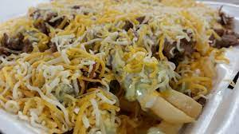

Carne Asada fries

This recipe will discuss on to make carne asada fries. This recipe is easy to make and does not take a lot of time. While the food is cooking you can
prepare the toppings and sauces on the side.
Ingredient lists
- fries
- steak
- Guacamole
- sour cream
- shredded cheese
Instructions
- Air fry or deep fry any brand of french fries ()
- Cook chopped steak while fries are being cooked
- Once both have finished cooking, pour fries into a plate
- Then add the cooked chopped steak on top
- Add any kind of cheese on top of the carne asada fries
- Add Guacamole and/or sour cream on top or any desired toppings or sauce